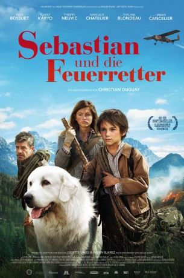
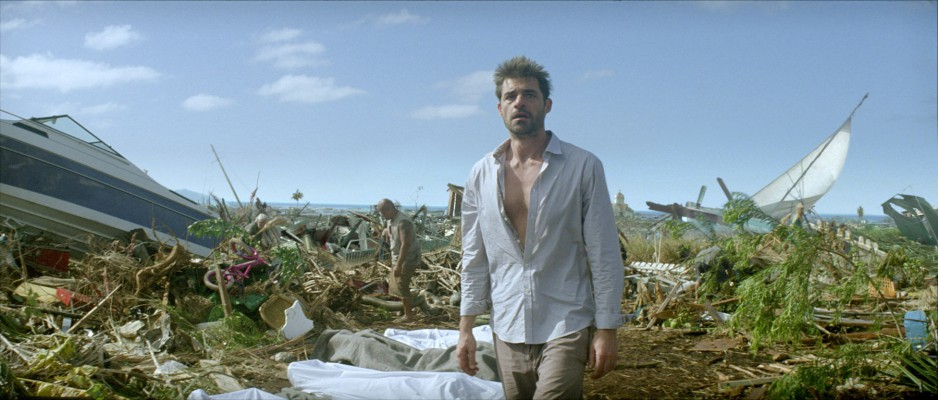

#10470 Sebastian und die Feuerretter
 
 IMDB-Wertung: 6.5 / 10
IMDB-Wertung: 6.5 / 10  Metascore: 0
Metascore: 0 
In dem Alpendorf Saint Martin lebt der 10-jährige Waisenjunge Sebastian (Félix Bossuet). Anstatt in die Schule zu gehen, jagt er lieber mit seiner Berghündin Belle über die Wiesen. Am meisten freut sich Sebastian auf die Rückkehr seiner Tante Angelina (Margaux Chatelier). Doch als er sie mit seinem Großvater César (Tchéky Karyo) abholen will, erfahren sie Schreckliches: Angelinas Flugzeug ist abgestürzt und hat den Wald in Brand gesetzt. Als einziger glaubt Sebastian daran, dass Angelina überlebt hat und gerettet werden muss. Jetzt kann nur noch der mürrische Pilot Pierre (Thierry Neuvic) helfen. Versteckt in dessen Flugzeug wollen Sebastian und Belle sicher gehen, dass Pierre die Suche nach Angelina ernst nimmt. Als der die blinden Passagiere entdeckt, bricht Chaos aus, dicht gefolgt von einer schmetternden Bruchlandung. Das ungleiche Trio muss sich nun zu Fuß auf den Weg durch den brennenden Wald machen.
Jahr: 2015
Dauer: 97 Minuten
FSK: 6
Land: Frankreich Studio: Neue Visionen FilmverleihTonspuren:
Untertitel: Deutsch,
Auflösung: 1080p (1920x800) Größe: 4986 MB
Genre: Abenteuer, Familie
Regisseur: Christian Duguay
Drehbuch: Cécile Aubry, Juliette Sales, Juliette Sales, Juliette Sales, Fabien Suarez
Soundtrack: Armand Amar
Darsteller:
 Félix Bossuet als Sébastien
Félix Bossuet als Sébastien Tchéky Karyo als César
Tchéky Karyo als César-  Thierry Neuvic als Pierre
- Margaux Chatelier als Angelina
- Thylane Blondeau als Gabriele
 Urbain Cancelier als Le maire
Urbain Cancelier als Le maire- Ludi Boeken als Marcel
- Matthieu Warter als Pompier
- Octave Bossuet als Octave
- Joseph Malerba als Alfonso
- Jeffrey Noel als Louis le mécanicien
- Fred Epaud als René
- Rémi Canaple als Conducteur pick-up
- Nicolas Comtet als Pompier
- Frédéric Vallet als Pompier
- Christophe Bourgeois als Pompier
- Lionel Erdogan als Soldat US
- Baptiste Salis als Pilote avion Angelina
- Philippe Gautier als Maître d'école
- Amour Rawyler als La mère de Victoria
- Victoria Duguay als Victoria
Datei: X:\3-Trilogie(A-F)\Belle & Sebastian\Sebastian und die Feuerretter (2015, FSK6, 1920x800).mkv seit 11.01.2019
Festplatte: HD Collection-2(A-Z)-3(A-M)
 Alle Filme aus Gruppe '3-Trilogie(A-F)\Belle & Sebastian'
Alle Filme aus Gruppe '3-Trilogie(A-F)\Belle & Sebastian'